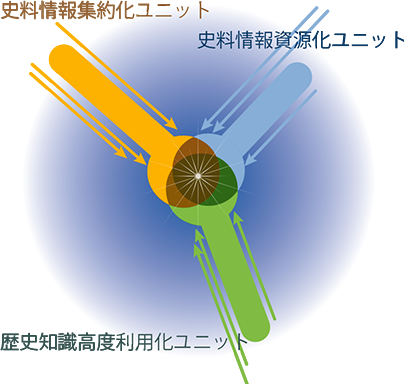

史料編纂所は、1984年から、長年の研究・編纂を通じて蓄積してきた史料情報・歴史情報の効率的利用と公開を目的として、歴史情報データベースシステム（SHIPS）の構築を開始し、1997 年以降、インターネットによってそれらを公開しています。それ以来、史料の目録情報・全文テキスト・画像情報の提供や、歴史事象の検索、研究支援などを目的としたデータベースを開発・運用し、より効果が高く利用しやすいものへと成長させていく事業を進めてきました。史料編纂所のデータベースシステムは、日本史を学び、調べ、考えるうえで不可欠の学術情報基盤となっています。
前近代日本史情報国際センターは、こうした史料編纂所の歴史情報研究の中核となる組織として、2006 年に設置されました。その活動は、情報学の成果・手法をも導入し、歴史史料から知識データをくみ上げるための研究へと範囲を広げています。また、史料編纂所が「日本史史料の研究資源化に関する研究拠点」の認定を受けたことにともない、2010年度以降、センターは史料編纂所の共同拠点としての活動を支え、その基盤を提供する組織として位置付けられています。
明治維新期以前(前近代)の日本史史料を対象として、それらにアクセスし、研究資源化し、そして歴史知識として文化社会に定着させるという過程を、コンピュータとネットワークを利用して構造化していくことを目的とし、史料情報集約化ユニット、史料情報資源化ユニット、歴史知識高度利用化ユニットの3つの研究ユニットを設けて研究を展開しています。
史料情報集約化ユニットでは、国内外の史料の所在や内容等に関する多様な情報を集約するためのシステムの研究を行っています。注釈情報などによるデータの高度化や、史料情報集約に適合するシステムの開発・改修を通じて、既存データベースの高機能化を進め、集約化データの生成や体系化・規格化の処理を効率的に行うための研究、データやシステムの多言語対応のための研究を進めています。
史料情報資源化ユニットでは、ここ数年における史料デジタル撮影の本格化や、既存の史料写真（マイクロフィルムから歴史的写真=ガラス乾板に至るまで）のデジタル化の進展をうけ、大量に生成されるようになった史料画像データについて、それらを系統的・組織的・効率的に処理し規格化するためのスキームの確立及びシステムの開発のための研究を行っています。それらを研究資源・知識資源として学界・社会に提供するとともに、利用環境の改善、運用の効率化、画像供与システムの高度化、知財管理・セキュリティ機能付与など、デジタル画像を提供するための史料画像情報システムの構築を進めています。
歴史知識高度利用化ユニットでは、史料研究の成果を学界・社会と共有するための歴史編纂知識化を進める研究を行っています。歴史知識データの蓄積を進めるとともに、歴史ナレッジベースとしての成長を目指し、知識共有のための史料・歴史情報の多元的参照システム研究、データベースの利便性向上につながる高機能化研究、ユーザーインターフェース高度化研究、外部連携システムやデータ共有化のための研究を進めています。
また、上記の3つの研究ユニットとともに、情報支援室がセンターに所属しています。情報支援室は、史料編纂所の情報事業全体の責任者である情報処理主幹のもと、SHIPSの保守・運用に当たり、史料編纂所が蓄積してきた歴史情報を世界にむけて日々発信する役割を支えています。
センターはセンター長（史料編纂所長の兼任）のもと6人の教員で組織し、情報処理主幹が委員長をつとめる前近代日本史情報国際センター運営委員会を置いています。
